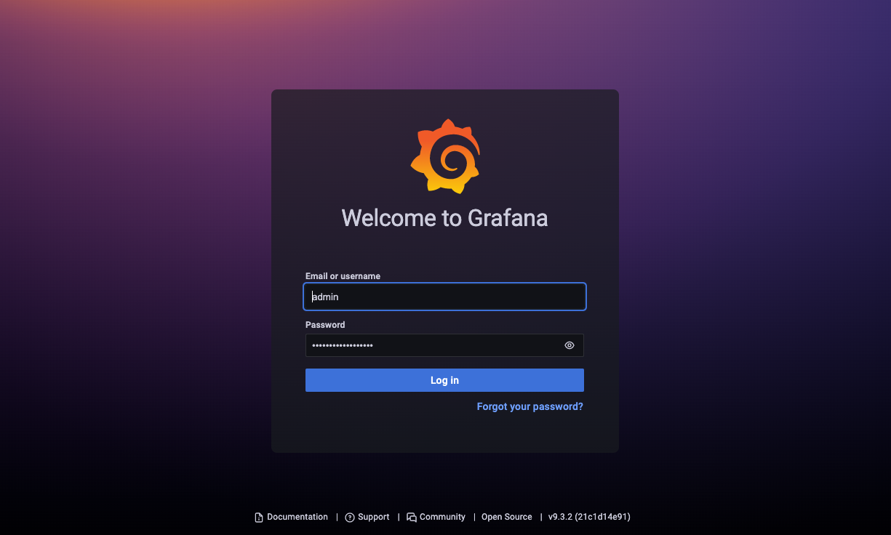
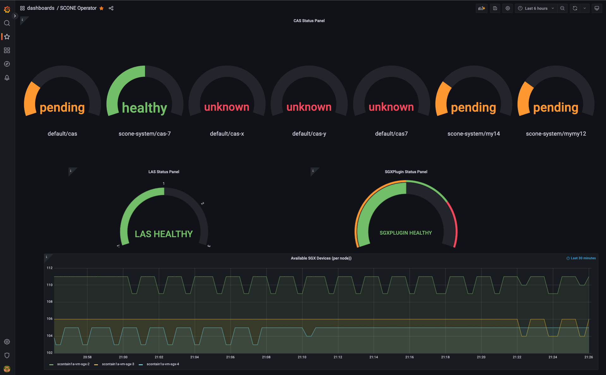
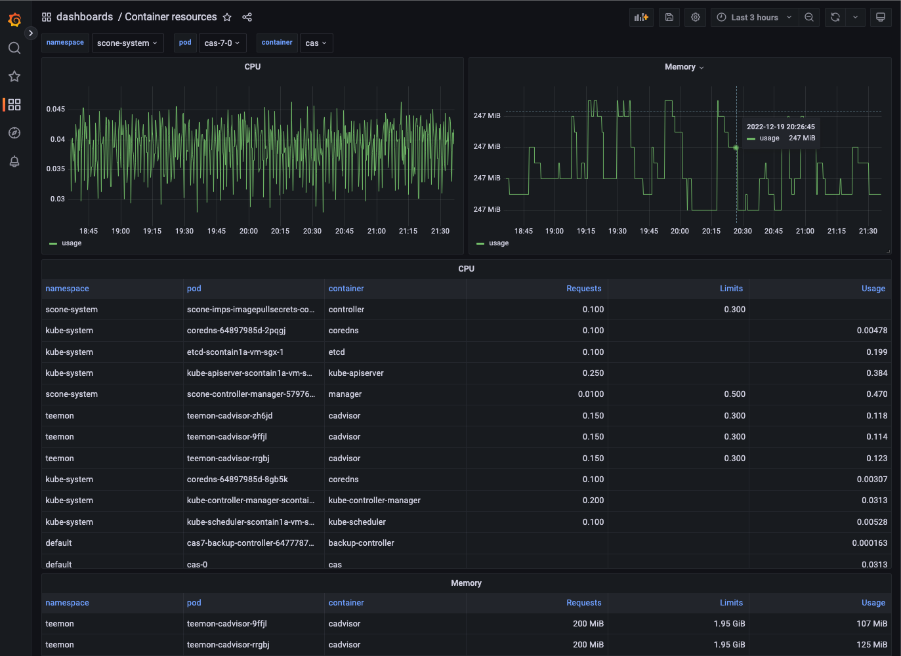

TeeMon
Deploy TeeMon monitoring framework to a Kubernetes cluster.
Prerequisites
- A Kubernetes cluster;
- Helm 3 client. Please refer to the official setup guide.
Install this chart
Add the repo
If you haven't yet, please add this repo to Helm.
Create a Kubernetes namespace for TEEMON
You need to create a Kubernetes namespace for TEEMON. You can use one of our sample manifests to create namespace teemon and label it to automatically inject image pull secret sconeapss in this namespace:
kubectl apply -f https://raw.githubusercontent.com/scontain/operator-samples/main/namespace-teemon.yamlSet Grafana credentials
By default, Grafana will create the user admin and use Kubernetes secret teemon-grafana as the password. You can create the user and password as follows:
kubectl create secret generic teemon-grafana --namespace teemon \
--from-literal=user=admin \
--from-literal=password='ChangeThisPassword'Install the chart
Use Helm to install TeeMon and all of its components (cAdvisor, SGX exporter, eBPF exporter, Prometheus and Grafana) in your cluster. We are deploying a Helm release called teemon, with default parameters:
helm install teemon sconeapps/teemon --namespace teemonCustomize the deploy
Helm allows you to configure different deploy parameters to adapt TeeMon to your needs (e.g. disable components, customize service ports, change service images). The default values are specified in teemon/values.yaml. You can customize this file or even have multiple files, each one defining a scenario, e.g.:
helm install my-production-teemon sconeapps/teemon -f /path/to/values-production.yamlYou can also customize the deploy by passing --set parameter=value arguments to helm install command:
helm install my-custom-teemon sconeapps/teemon --set cadvisor.enabled=false --set grafana.service.nodePort=31197Have a look at the Parameters section for a complete list of parameters this chart supports.
Data Source
This chart automatically deploys a Prometheus service that collects metrics. These metrics are accessible by Grafana via this URL:
http://teemon-prometheus-server.teemon.svc.cluster.localGrafana and Prometheus Dashboards
You can connect to the Prometheus dashboard using verb port-forward:
kubectl port-forward service/teemon-prometheus-server 8082:80 --namespace teemonYou can now view the Prometheus dashboard in your browser on localhost:8082.
You can connect to the Grafana dashboard using verb port-forward:
kubectl port-forward service/teemon-grafana 8091:3000 --namespace teemonYou can now view the Grafana dashboard in your browser on localhost:8091.
Dashboards
You can view the Grafana dashboards in your browser as described above. You fist need to log into Grafana using the user admin and the password that you stored in the secret teemon-grafana (see above). The Grafana login screen looks something like this:

TeeMon will automatically configure a set of dashboards for Grafana:
- SCONE Operator dashboard
- A Container Resources dashboard
- A Kubernetes Persistent Volumes dashboard
- A Cilium Dashboard
- ...
You can select the dashboards using the dashboard tab on the left:

When selecting the SCONE Operator dashboard, the dashboard displays a gauge for the status of each CAS instance and for the status of the LAS and SGXPlugin.
Moreover, the currently available SGX devices are displayed in a graph:

You can use the Container Resources dashboard to inspect pods like a CAS pod:

Background
Kubernetes is the industry-standard system for container orchestration. It features an application-centric design, a well-established API with a uniform set of resources, as well as a powerful ecosystem of third-party tools and extensions. Its controllers, always pushing the system to the desired state, allow applications and infrastructures to be defined in a declarative manner. It supports up to 5000 nodes in a single cluster.
Helm is a package manager for Kubernetes applications. A Helm chart is an application definition for Kubernetes that can be easily deployed, managed and distributed.
To allow TeeMon to be installed in larger infrastructures managed by Kubernetes, we created a Helm chart.
Each metric exporter is deployed as a DaemonSet resource. Kubernetes controllers ensure that DaemonSets have exactly one replica running per node in the cluster (including new nodes added in the future). Prometheus dynamically scrapes the running exporters through Kubernetes service discovery and resource annotations. These two features combined allow TeeMon to adapt to any change in the cluster topology.
The TeeMon chart also allows more advanced scheduling scenarios. For instance, in a heterogeneous cluster with SGX and non-SGX nodes, it is possible to prevent SGX-related exporters from being deployed on non-SGX nodes through special Kubernetes labels, called taints, which allow nodes to repel certain application.
Prometheus aggregates all the metrics and send them to Grafana, where the whole infrastructure can be monitored. Grafana service is the only one accessible from outside the cluster.
Scheduling components
By default, all the exporters are deployed to all the worker nodes of the cluster. If you want to avoid certain nodes to get exporters running on them (for instance, if you have an heterogeneous cluster and want to prevent SGX-exporters from running on non-SGX nodes), use taints and tolerations.
Grafana and Prometheus deployments will be scheduled to an arbitrary node. If you want to have them schedule on a particular subset of nodes, use nodeSelectors.
Parameters
A complete list of parameters this chart supports. Please note that Grafana and Prometheus are installed as sub-charts, which means that you can effectively override any of the parameters defined in their original charts (in the table below we list only a subset of them). To see the complete list of parameters of such charts, please check their respective official chart documentation: Grafana, Prometheus.
| Parameter | Description | Default |
|---|---|---|
ebpfexporter.enabled |
Enable eBPF exporter | true |
ebpfexporter.image |
eBPF exporter image | registry.scontain.com/sconecuratedimages/teemon:ebpf-exporter |
ebpfexporter.port |
eBPF exporter service port | 9440 |
ebpfexporter.resources |
CPU/Memory resource requests/limits for node | {{"limits": {"memory": "128Mi", "cpu": "500m"}}} |
sgxexporter.enabled |
Enable SGX exporter | true |
sgxexporter.image |
SGX exporter image | registry.scontain.com/sconecuratedimages/teemon:sgx-exporter |
sgxexporter.port |
SGX exporter service port | 9441 |
sgxexporter.resources |
CPU/Memory resource requests/limits for node | {} |
cadvisor.enabled |
Enable cAdvisor for Docker metrics | true |
cadvisor.image |
cAdvisor image | k8s.gcr.io/cadvisor:v0.30.2 |
cadvisor.resources |
CPU/Memory resource requests/limits for node | {{"requests": {"memory": "200Mi", "cpu": "150m"}}, {"limits": {"memory": "2000Mi", "cpu": "300m"}}} |
grafana.enabled |
Enable Grafana | true |
grafana.admin.existingSecret |
Existing secret with Grafana credentials | nil |
grafana.image.tag |
Grafana image tag | 6.5.0 |
grafana.service.type |
Grafana service type | NodePort |
grafana.env |
Extra environment variables passed to pods | {"GF_AUTH_ANONYMOUS_ENABLED": "true", "GF_USERS_ALLOW_SIGN_UP": "false"} |
grafana.resources |
CPU/Memory resource requests/limits | {} |
grafana.nodeSelector |
Node labels for pod assignment | {} |
grafana.sidecar.datasources |
Enables the cluster wide search for data sources and adds/updates/deletes them in grafana | true |
grafana.sidecar.dashboards |
Enables the cluster wide search for dashboards and adds/updates/deletes them in grafana | true |
prometheus.enabled |
Enable Prometheus | true |
prometheus.server.image.tag |
Image tag for Prometheus server | v2.8.1 |
prometheus.server.persistentVolume.enabled |
If true, Prometheus server will create a Persistent Volume Claim | false |
prometheus.server.resources |
Prometheus server resource requests and limits | {} |
prometheus.server.nodeSelector |
Node labels for Prometheus server pod assignment | {} |
prometheus.server.global.scrape_interval |
How frequently to scrape targets by default | 5s |
prometheus.server.global.scrape_timeout |
How long until a scrape request times out | 5s |
prometheus.server.global.evaluation_interval |
How frequently to evaluate rules | 5s |
prometheus.nodeExporter.extraArgs |
Additional node-exporter container arguments | {"collector.filesystem.ignored-mount-points": "^/(sys|proc|dev|host|etc|rootfs/var/lib/docker/containers|rootfs/var/lib/docker/overlay2|rootfs/run/docker/netns|rootfs/var/lib/docker/aufs)($$|/)"} |
prometheus.alertmanager.enabled |
If true, create alertmanager | false |
prometheus.kubeStateMetrics.enabled |
If true, create kube-state-metrics sub-chart, see the kube-state-metrics chart for configuration options | false |
prometheus.pushgateway.enabled |
If true, create pushgateway | true |
prometheus.pushgateway.service.type |
Type of pushgateway service to create | NodePort |
imagePullSecrets |
teemon pull secrets, docker-hub credentials encapsulated in a kubernetes secret | [{"name": "sconeapps"}] |